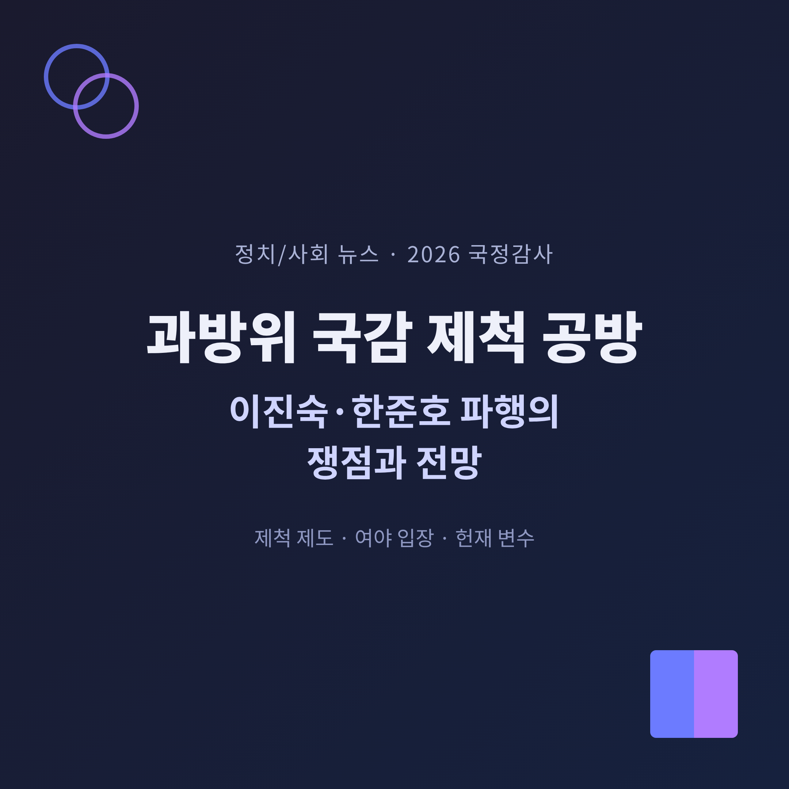
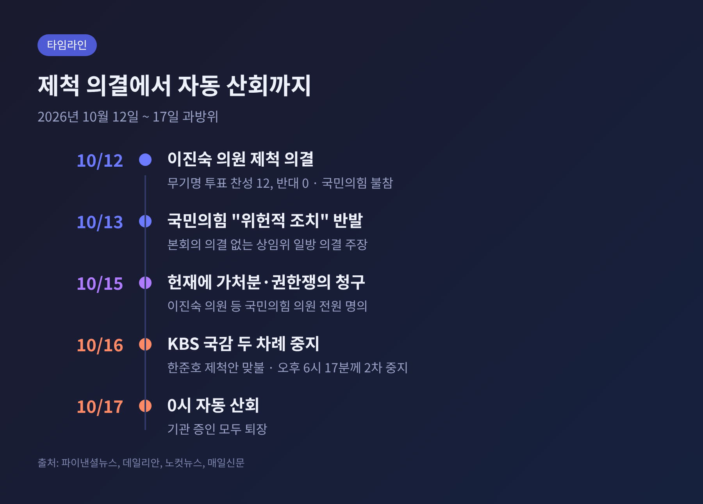
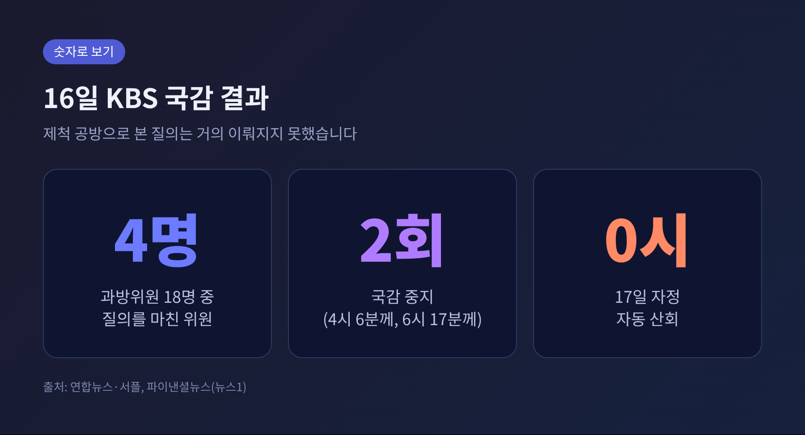
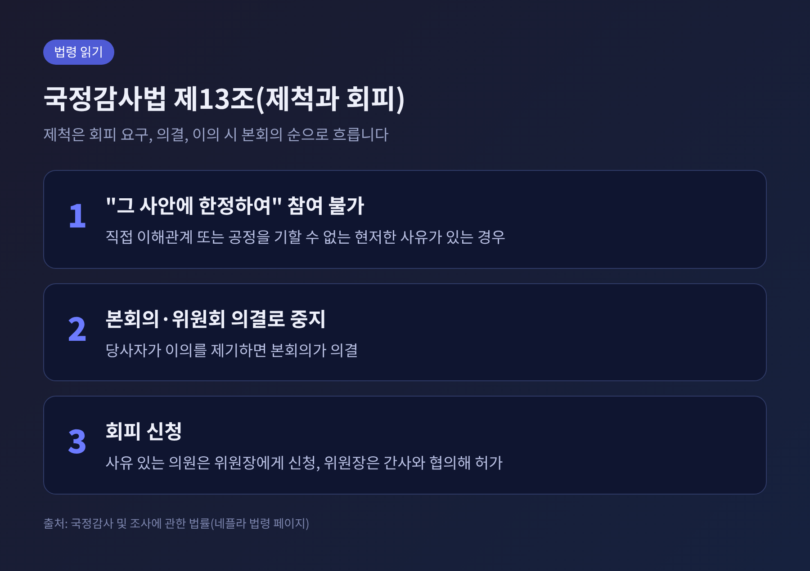
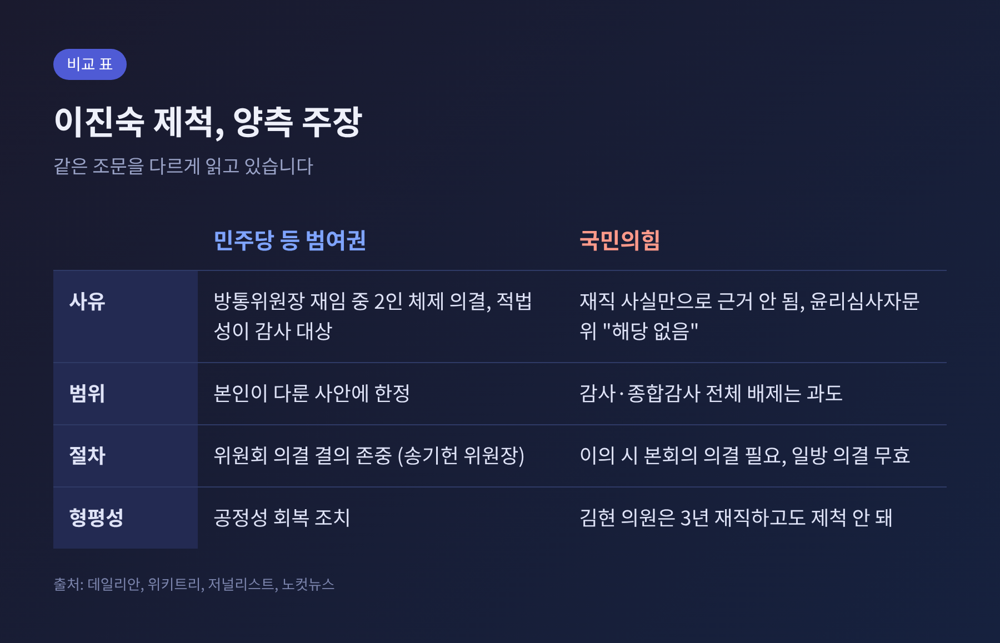
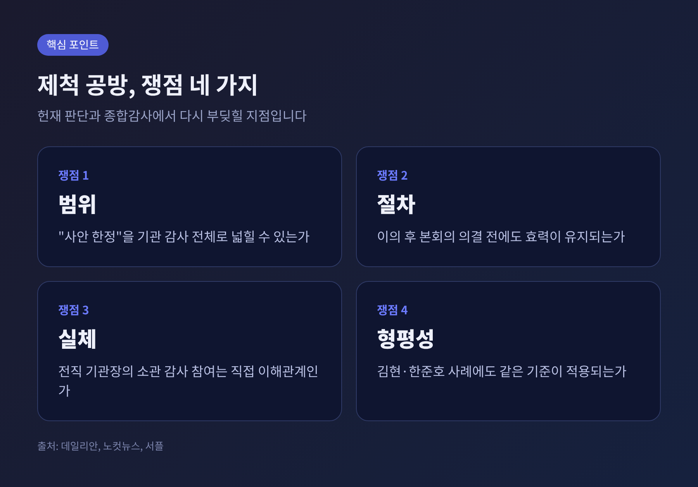
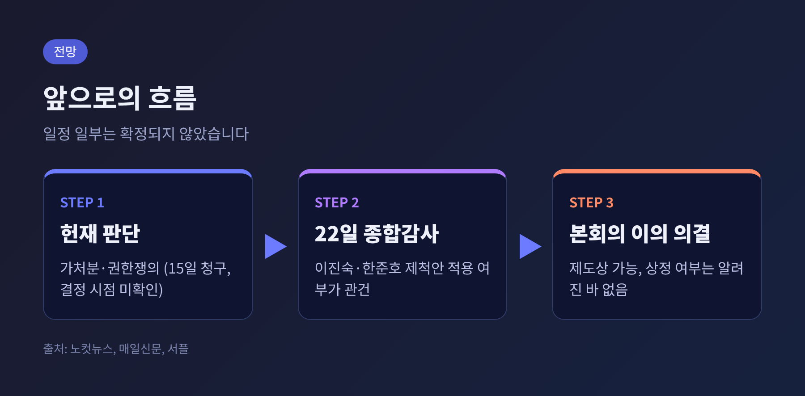

오늘은 2026년 국정감사 2주차 마지막 날 국회 과학기술정보방송통신위원회(과방위)에서 벌어진 제척 공방을 정리해 보려 합니다. 이진숙 국민의힘 의원과 한준호 민주당 간사를 둘러싼 이 다툼은 국감이 왜 멈췄는지, 제척이라는 제도가 무엇인지를 함께 보여 줍니다. 여야 양측의 주장을 가능한 한 같은 비중으로 옮기고, 앞으로의 일정과 전망까지 짚겠습니다.
3줄 요약 1. 과방위는 10월 12일 이진숙 의원 제척안을 의결했고, 16일 KBS 국감은 이 문제로 두 차례 중지된 끝에 17일 0시 자동 산회했습니다. 2. 국민의힘은 한준호 의원 제척안으로 맞섰고, 이진숙 의원 측은 15일 헌법재판소에 가처분과 권한쟁의심판을 청구했습니다. 3. 핵심 쟁점은 제척의 범위와 절차이며, 헌재 판단과 22일 종합감사가 다음 고비입니다.
■ 무슨 일이 있었나
사건은 10월 12일에 시작됐습니다. 이날 과방위는 방송미디어통신위원회와 방송미디어통신심의위원회를 대상으로 국감을 열었습니다. 민주당 등 범여권은 방송통신위원장을 지낸 이진숙 의원에게 회피를 요구했습니다. 이 의원이 응하지 않자 제척안이 상정됐습니다.
송기헌 위원장은 오후에 정회하고 전체회의를 열었습니다. 제척안을 의사일정에 추가하는 표결이 먼저 있었고, 이어 무기명 투표에서 찬성 12표, 반대 0표로 제척이 의결됐습니다. 민주당·조국혁신당·무소속 12명이 참여했고, 국민의힘 의원들은 반발하며 표결에 불참했습니다. 이날 회의는 약 6시간 동안 이 문제로 공전했고, 숏폼 드라마 청소년 보호 같은 민생 현안 질의는 오후 5시 35분께에야 재개됐습니다.

16일에는 KBS·EBS·방송문화진흥회·시청자미디어재단 국감이 열렸습니다. 오후 2시 30분께 개회했지만, 제척 문제로 충돌하다 4시 6분께 첫 정회가 선언됐습니다. 5시 28분에 주질의가 시작됐으나 6시 17분께 다시 중지됐고, 감사는 끝내 재개되지 못했습니다. 기관 증인들이 모두 퇴장하면서 17일 0시에 자동 산회됐습니다.
과방위원 18명 가운데 질의를 마친 사람은 4명이었습니다.

■ 한준호 제척안은 왜 나왔나
16일 국감에서는 두 번째 제척 문제가 불거졌습니다. 국민의힘은 지난 9월 한준호 의원실 보좌진이 KBS에 전화해 김승원 전 법무부 장관 후보자 관련 보도를 문제 삼았다며 이른바 보도 외압 의혹을 제기했습니다. 그런데 한 의원이 증인으로 나온 김우성 KBS 부사장과 최광호 KBS 기자협회장에게 이 의혹을 직접 질의하자, 국민의힘은 당사자가 질의하는 것은 이해충돌이라고 반발했습니다.
국민의힘은 "이진숙은 되고 한준호는 안 되나"라는 취지로 같은 기준을 적용하라며, 16일 KBS 국감과 22일 종합감사에서 한 의원을 배제하라는 제척안을 위원장에게 제출했습니다. 야당 과방위원들은 이를 두고 "뻔뻔한 내로남불"이라고 비판했습니다.
한 의원 측 입장은 다릅니다. 보좌관이 기자에게 직접 전화한 것이 아니라 상시 연락하는 관계자와 통화한 것이고, 기사 삭제나 수정을 요청한 적이 없다는 설명입니다. 최 협회장도 회사 측 역시 외압으로 판단하지 않는다는 취지로 답했습니다. 한 의원 측은 의혹을 제기한 김장겸 의원에 대한 법적 조치 방침도 밝혔습니다.
■ 왜 중요한가
국정감사는 국회가 행정부와 공공기관을 점검하는 가장 큰 헌법적 수단입니다. 국회의원 개인에게는 질의권이, 위원회에는 감사 일정이 걸려 있습니다. 그 질의권을 다수결로 제한할 수 있는지가 이번 다툼의 본질입니다.
통상 이해충돌은 본인의 회피 신청으로 풀도록 설계돼 있습니다. 이번에는 위원회 표결로 한 의원의 감사 참여 자체가 막혔고, 그 반대편에서는 맞제척 요구가 나왔습니다. 제척이 정치적 공방의 수단이 될 수 있다는 우려가 여기서 나옵니다.
공영방송 감사라는 본래 의제도 걸려 있습니다. 16일에는 박장범 KBS 사장이 세계공영방송 서울총회 의장 일정을 이유로 불출석 사유서를 냈습니다. 범여권은 총회가 끝난 뒤 출석을 요구했지만 여야 합의가 이뤄지지 않아 끝내 출석하지 않았습니다. 민주당 김현 의원은 KBS 신뢰 실추와 800억원대 자산 손실에 대한 책임을 묻고자 했습니다. 정작 이 질문들은 충분히 다뤄지지 못했습니다.
■ 제척의 법적 구조
제척(除斥)은 본래 법관이 사건과 특수한 관계에 있을 때 재판에서 배제하는 제도를 가리키는 말입니다. 국정감사에서는 「국정감사 및 조사에 관한 법률」 제13조가 근거입니다.

조문의 내용은 세 갈래입니다. 첫째, 직접 이해관계가 있거나 공정을 기할 수 없는 현저한 사유가 있으면 "그 사안에 한정하여" 감사에 참여할 수 없습니다. 둘째, 사유가 인정되면 본회의나 위원회 의결로 감사를 중지시킬 수 있고, 당사자가 이의를 제기하면 본회의가 의결합니다. 셋째, 사유가 있는 의원은 위원장에게 회피를 신청해야 하며, 위원장은 간사와 협의해 허가할 수 있습니다.
정리하면 제도는 회피를 먼저 요구하고, 안 되면 의결로 제척하며, 이의가 있으면 본회의가 마지막에 정하는 순서입니다. 이번 사안에서 쟁점이 갈리는 곳은 바로 "사안 한정"과 "이의 시 본회의"라는 두 문구입니다.
■ 여야는 각각 무엇을 주장하나
양측의 논리를 나란히 놓으면 이렇습니다.

민주당 측은 이 의원이 방통위원장 재임 중 위원 2명만으로 KBS·MBC 이사 선임 등을 의결했고, 그 적법성이 이번 감사 대상이자 소송 대상이라는 점을 듭니다. 이주희 의원은 감사의 공정성을 지키기 위한 조치라고 설명했습니다. 제척은 이 의원이 다룬 사안에 한정되며 위원회 전체 안건을 막는 것이 아니라는 입장입니다. 송기헌 위원장은 법률이나 다른 권한으로 바뀌지 않는 한 위원회 결의를 존중해야 한다고 했습니다.
국민의힘 측 반론은 네 가지로 요약됩니다.
이 의원은 "다수의 횡포"라고 비판하면서도, 이해충돌로 판단되는 사안에서는 발언을 중단하겠다는 뜻을 밝혔습니다. 발언권은 유권자에게서 받은 것이라는 설명도 덧붙였습니다.
■ 남은 쟁점 네 가지

위 주장을 압축하면 쟁점은 네 가지입니다. 첫째는 범위입니다. 사안 한정이라는 문구를 어디까지 읽을 것인가의 문제입니다. 방통위원장 재임 중 결정한 사안만 막을 수 있는지, 해당 기관 감사 전체를 막을 수 있는지에 따라 결론이 달라집니다.
둘째는 절차입니다. 위원회 의결 뒤 이의가 나왔을 때 본회의 의결 전에 제척 효력이 유지되는지는 조문을 어떻게 읽느냐에 달렸습니다. 셋째는 실체입니다. 전직 기관장이 그 기관 소관 감사에 참여하는 것이 직접 이해관계에 해당하는지, 윤리심사자문위의 해당 없음 답변이 어떤 무게를 갖는지를 따져야 합니다.
넷째는 형평성입니다. 김현 의원 사례와 한준호 의원 사례가 모두 같은 기준으로 판단되어야 한다는 주장이 나옵니다. 어느 한쪽 사례가 일관되게 적용되지 않으면 제도의 신뢰가 흔들립니다.
■ 앞으로의 일정과 전망
가장 큰 변수는 헌법재판소입니다. 이진숙 의원 등 국민의힘은 15일 헌재에 제척 효력정지 가처분 신청과 권한쟁의심판 청구서를 냈습니다. 다만 헌재의 심리 일정과 결정 시점은 확인되지 않았습니다. 국회 내부 결정이 권한쟁의심판 대상이 될 수 있는지를 포함해 헌재가 어떤 판단을 내릴지는 아직 알 수 없습니다.
국감 쪽 일정으로는 22일 종합감사가 거론됩니다. 이 의원은 제척안에 따라 종합감사에서도 배제될 예정이고, 한준호 의원 제척안 역시 22일 종합감사를 겨냥하고 있습니다. 감사 재개 일정과 박장범 사장의 출석 여부는 기사 작성 시점에 확정되지 않았습니다. 과방위 국감 전체 종료일도 이번 조사에서는 확인하지 못했습니다.

전망은 조심스럽게 나눠 볼 수 있습니다. 헌재가 가처분을 받아들이면 이 의원의 감사 참여 길이 열리고, 기각되면 제척 결의가 유지된 채 종합감사가 치러질 가능성이 큽니다. 당사자의 이의에 따라 본회의가 제척 여부를 의결하는 방안도 제도상 열려 있으나, 본회의 상정 여부는 알려진 바 없습니다. 어느 경로든 여야 합의가 없으면 22일 종합감사도 같은 충돌을 되풀이할 수 있다는 점은 분명합니다.
정리하면 이렇습니다. 제척은 감사의 공정성을 지키는 장치이면서, 잘못 쓰면 의원의 질의권을 막는 수단이 될 수 있는 양날의 제도입니다. 이번 공방은 그 경계를 어디에 둘 것인가를 묻고 있습니다.
"공정을 말하는 쪽도, 권한을 말하는 쪽도 같은 잣대를 먼저 내놓아야 합니다."
제도가 어떤 결론을 내든, 감사의 시간은 공영방송과 플랫폼 문제를 점검하는 데 쓰여야 한다고 생각합니다. 헌재의 판단과 22일 종합감사가 그 방향을 가를 것입니다.
출처: 파이낸셜뉴스·뉴스1(10/17), 연합뉴스·서플(10/16), 머니투데이(10/16), 재경일보(10/17), 데일리안(10/12, 10/13), 위키트리(10/13), 저널리스트(10/12), CBS 노컷뉴스(10/15), 매일신문(10/15), 국정감사 및 조사에 관한 법률.